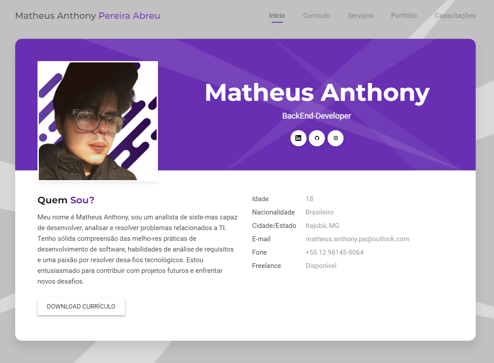
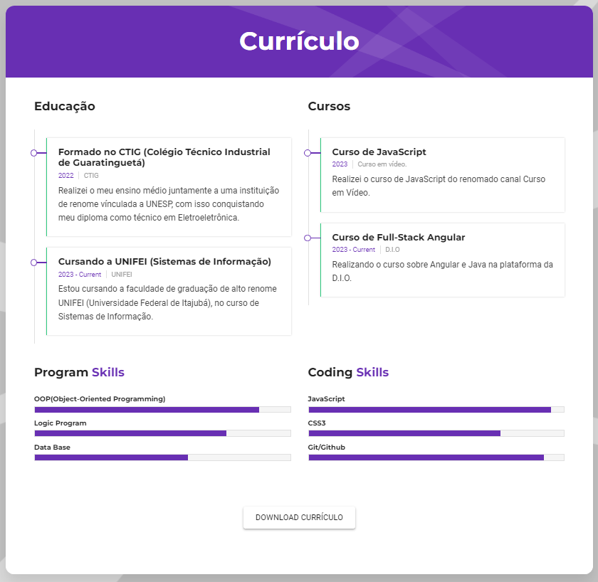
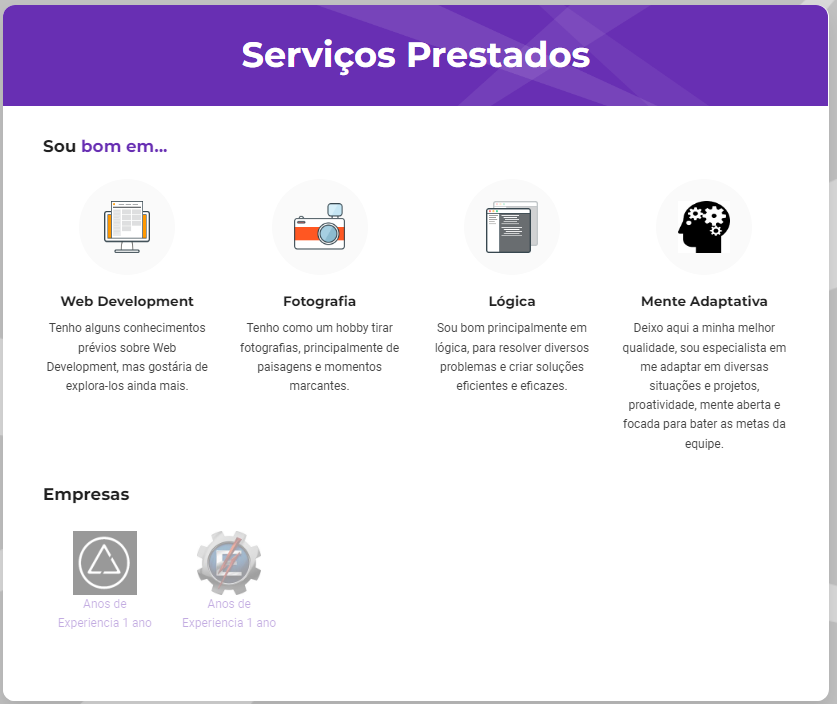
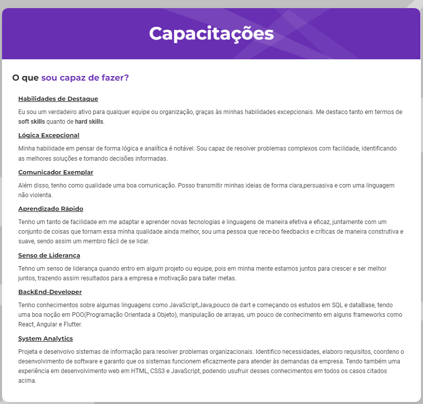

Currículo Online

Descrição do Projeto:
Este Currículo online foi um projeto que realizei como um desafio próprio, precisava de um lugar onde todas as minhas informações estivessem reunidas em apenas 1 lugar, logo encontrei esse desafio, que foi realizado com afinco e eficiência.

Currículo:
Nesta página coloquei minhas principais formações e cursos, e também acrescentei em um gráfico de barras o nível de algumas hard-skills.

Serviços Prestados
Nesta página pode se encontrar algumas das minhas qualidades e hobbies, juntamente por onde eu passei em questão de trabalho ou onde estou realizando o meu trabalho recentemente.

Capacitações
Por último, nessa página podemos observar as minhas capacitações de maneira mais detalhada, para que o leitor tenha consciência das minhas qualidades.
Por fim, deixo aqui o repositório do Currículo Online .
← Voltar ao início